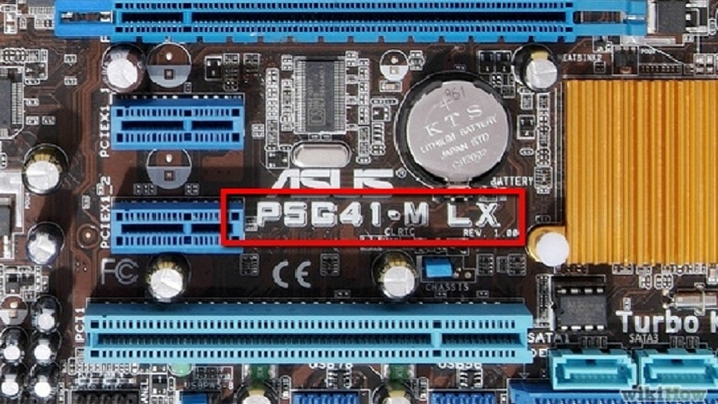

Маркировки на материнских платах также содержат информацию о производителе, модели, чипсете, форм-факторе и других характеристиках.

Вот общие принципы расшифровки маркировок материнских плат:
производитель:
примеры: Asus, Gigabyte, MSI, ASRock и другие.
серия:
маркировке обычно указывается модель материнской платы. Например, Asus ROG Strix B550-F Gaming
чипсет:
маркировка может содержать информацию о чипсете материнской платы, например, Intel Z490, AMD B550 и т.д.
форм-фактор:
обычные форм-факторы материнских плат: ATX, Micro-ATX, Mini-ITX и другие. Это может быть указано в маркировке.
поддерживаемый процессор:
в некоторых маркировках указывается поддерживаемый сокет и диапазон процессоров.
специфические характеристики:
могут включать в себя информацию о количестве слотов для оперативной памяти, слотах расширения, встроенном аудио/сетевом контроллере, портах USB и других особенностях.
серийный номер и ревизия:
на некоторых материнских платах есть серийный номер и номер ревизии, которые могут быть полезны при поиске драйверов или обновлений.